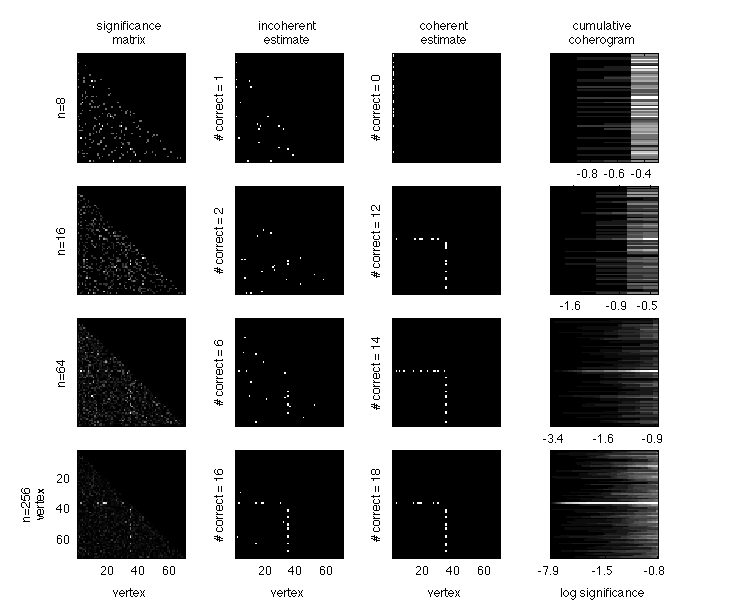
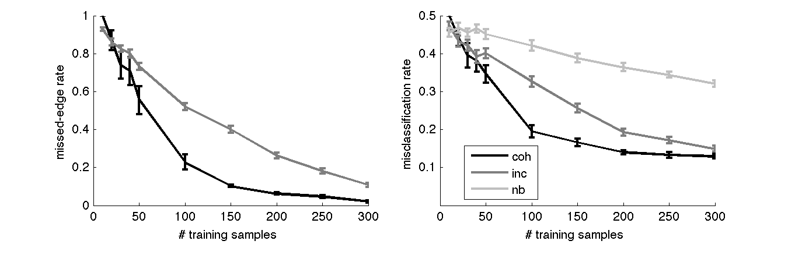
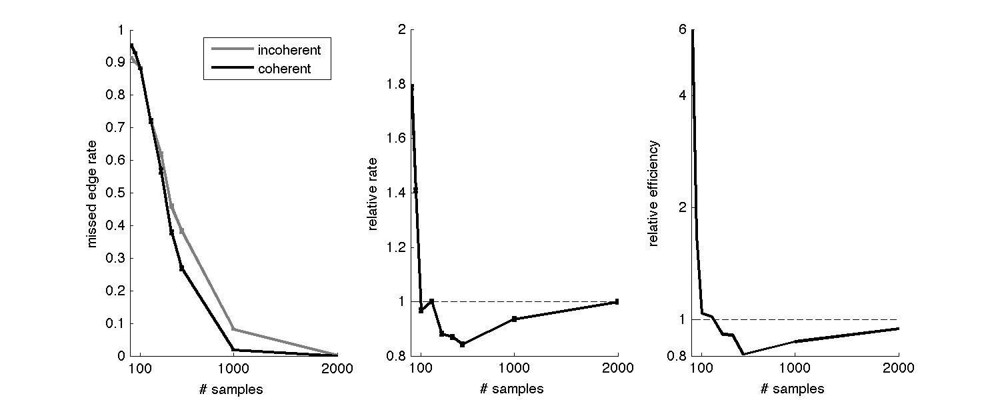
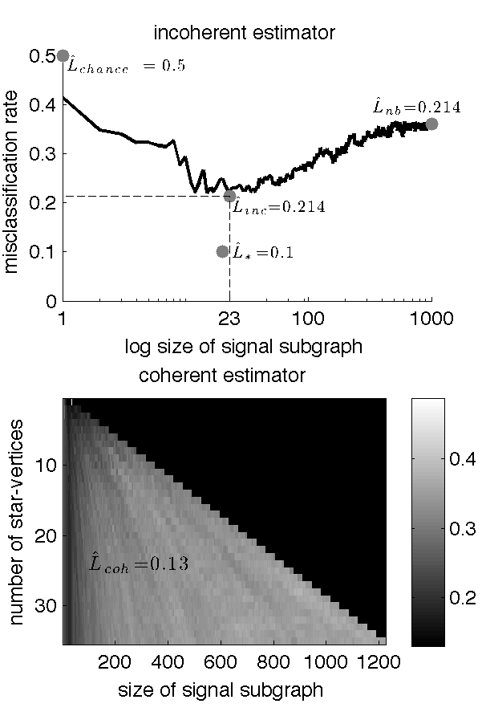
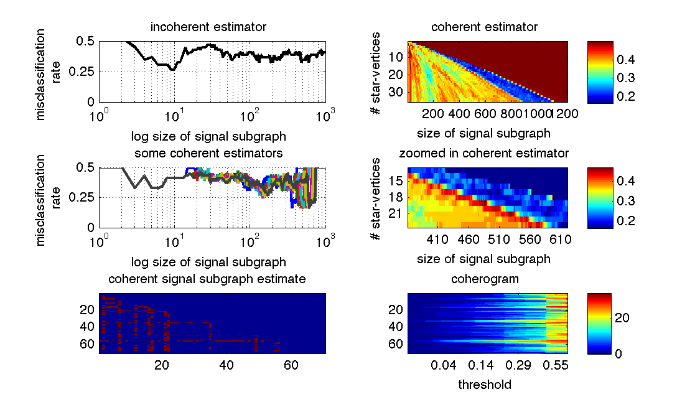
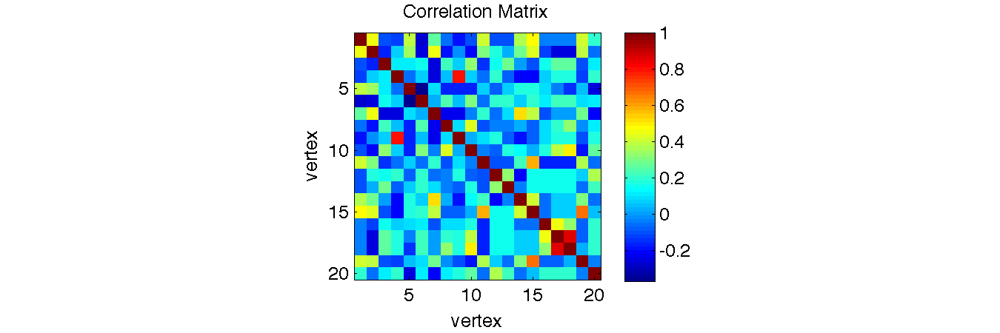

Introduction
Methods
Setting
Let $\GG: \Omega \mapsto \mc{G}$ be a graph-valued random variable with samples $G_i$. Each graph is defined by a set of $V$ vertices, $\mc{V}=\{v_i\}_{i \in [V]}$, where $[V]=\{1,\ldots, V\}$, and a set of edges between pairs of vertices $\mc{E}$. An adjacency matrix, $A$, is a binary $V \times V$ matrix listing which vertices share an edge. Let $Y:\Omega \mapsto \mc{Y}$ be a discrete-valued random variable with samples $y_i$. Assume the existence of a collection of $n$ exchangeable samples of graphs and their corresponding classes from some true but unknown joint distribution: $\{(G_i,y_i)\}_{i \in [n]} \overset{exch.}{\sim} \PP_{\GG,Y}$. Our aim (or exploitation task) is then to build a graph classifier (or simply "classifier" for short) that could take a new graph, $g$, and correctly estimate its class, $y$. Moreover, we are interested solely in graph classifiers that are interpretable with respect to the vertices and edges of the graph (in other words, manifold learning, feature extraction, and related approaches are inadmissible).Model
A model defines the set of admissible distributions. In the graph classification domain, we consider the model, $\mc{P}_{\GG,Y}$, which includes all joint distributions over graphs and classes under consideration: $\mc{P}_{\GG,Y}=\{\PP_{\GG, Y} : \bth \in \bTh\}$, where $\bth$ indexes each distribution, and must live in $\bTh$. Two "standard" approaches for tackling a classification problem are (i) the generative approach and (ii) the discriminative approach. In a generative strategy, one defines the model by deconstructing the joint distribution into a product of a likelihood term and a prior term: $\PP_{\GG,Y}=\PP_{\GG | Y}\PP_Y$. In a discriminative strategy, one defines the model by deconstructing the joint distribution into a posterior term and a marginal term: $\PP_{\GG,Y}=\PP_{Y | \GG}\PP_{\GG}$. We proceed using a hybrid generative-discriminative approach whereby we describe a generative model and place constraints on the discriminant boundary.First, assume that each graph has the same set of labeled vertices, so that all the variability in the graphs is in the adjacency matrix, which implies that $\PP_{\GG,Y}=\PP_{A,Y}$. Second, assume edges are independent, that is: $\PP_{A,Y}=\prod_{u,v \in \mc{E}} \PP_{A_{uv},Y}$. Now, consider the generative deconstruction, and let $f_{uv|y}=\PP[A_{uv} | Y=y]$ and $\PP_Y=\pi_Y$, noting that $\PP_{\GG,Y}=f_Y \pi_Y$. Third, assume the existence of a class-conditional difference, that is $f_{uv|0} \neq f_{uv|1}$ for some $(u,v) \in \mc{E}$, and denote the edges satisfying that condition comprise the signal subgraph, $\mc{S}=\{(u,v) \in \mc{E}: f_{uv|0} \neq f_{uv|1}\}$. Fourth, for concreteness, assume that the graphs are simple graphs, that is, undirected, with binary edges, and lacking (self-) loops. Thus, the likelihood of an edge between vertex $u$ and $v$ is given by a Bernoulli random variable with parameter $p_{uv}$: $f_{uv|y}=\text{Bern}(A_{uv}; p_{uv|y})$. Together, these four assumptions imply the following model: \begin{align} \mc{P}_{\GG,Y}=\{\PP_{\GG, Y}=\prod_{uv \in \mc{S}} \text{Bern}(A_{uv|Y}; p_{uv|Y}) \pi_Y : \bth \in \bTh\}, \end{align} where $\theta$ is composed of three parameters: $\mc{S}$, $\mb{p}$, and $\mb{\pi}$, each of which lives in a parameter space. First, the signal subgraph parameter, $\mc{S}$, must be a non-empty subset of all possible edges: $\mc{S} \subseteq \mc{E} \cap \mc{S} \neq \emptyset$. Second, the likelihood term parameter, $\mb{p}=\{p_{uv|y}\}_{uv \in \mc{S}, y \in \mc{Y}}$, is constrained in that each term must be between zero and one: $p_{uv|y} \in (0,1)$. Third, the prior terms, $\mb{\pi}=\{\pi_y\}$, must be greater than zero and sum to one: $\pi_y \geq 0, \sum_y \pi_y=1$. Thus, given a specification of the signal subgraph, the class-conditional likelihood of an edge in each the signal subgraph, and class-priors, one completely defines a possible joint distribution over graphs and classes.
Classifier
Formally, we say that a classifier, $h$, is any function satisfying $h: \mc{G} \mapsto \mc{Y}$. We desire to obtain the best possible classifier, $h_*$. To determine which is best, we first define a loss function, which rates the performance of each classifier as a function of the distribution: $\ell: \mc{P} \times \mc{H} \mapsto \Real_{\geq 0}$, where $\mc{H}$ is the space of admissible classifiers. Although one can reasonably assess the performance of a classifier with many different criteria, given a distribution $\PP=\PP_{\GG, Y}$, it is "natural" to measure classification performance by the expected misclassification rate: \begin{align} \ell_\PP(h) = \EE_{\PP}[h(G) \neq Y] = \int_{g \in \mc{G}, y\in \mc{Y}} \PP[h(g) \neq y] \PP[g,y] d(g,y). \end{align} The optimal (best) classifier (under model $\mc{P}$ and loss-function $\ell$) is the classifier with minimal loss: $h_*=\argmin_{h \in \mc{H}} \ell_\PP(h)$. Such a classifier is called Bayes optimal, and the error associated with such a classifier is called Bayes error or Bayes risk. It can be shown that the classifier that maximizes the class-conditional posterior, $\PP_{Y | \GG}$ is Bayes optimal [1]: \begin{align} h_*(g) = \argmin_{h \in \mc{H}} \ell_\PP(h) = \argmax_{y \in \mc{Y}} \PP[y|g] = \argmax_{y \in \mc{Y}} \PP[g|y] \PP[y]. \end{align} Given the above assumed model, the above equation can be further factorized and simplified. In particular: \begin{align} \argmax_{y \in \mc{Y}} \PP[g|y] \PP[y] &= \argmax_{y \in \mc{Y}} \PP[a|y] \PP[y] = \argmax_{y \in \mc{Y}} \prod_{u,v \in \mc{E}} f_{uv | y} \pi_y = \argmax_{y \in \mc{Y}} \prod_{u,v \in \mc{S}} f_{uv | y} \pi_y \\ &= \argmax_{y \in \mc{Y}} \prod_{u,v \in \mc{S}} \text{Bern}(a_{uv|y}; p_{uv|y}) \pi_y \end{align} where the above four equalities follow from the above four assumptions, respectively.Unfortunately, in general, a Bayes optimal classifiers are unknown. In such settings, it is therefore desirable to construct a classifier estimate from a set of training data. Formally, let $\mc{D}_n$ denote the data corpus, assumed to be sampled exchangeably from the true but unknown distribution: $\{(G_i,y_i)\}_{i \in [n]} \overset{exch.}{\sim} \PP_{\GG, Y}$. Given such a training corpus, and a new, as yet unclassified graph, $g$, an estimated classifier predicts the true (but unknown) class of $g$ by utilizing the training corpus: $\mh{h}_n: \mc{G} \times (\mc{G} \times \mc{Y})^n \mapsto \mc{Y}$. When a model, $\mc{P}_{\GG,Y}$ is specified, a beloved approach is to use a Bayes plug-in classifier, in which one first estimates the distribution, and then plugs the estimates into the above equation. Due to the above simplifying assumptions, the Bayes plug-in classifier for this model is defined as follows. First, estimate the three model parameters (1) $\mc{S}$, (2) $\mb{p}=\{p_{uv|y}\}_{uv \in \mhc{S}, y \in \mc{Y}}$, and (3) $\mb{\pi}=\{\pi_y\}$. Second, plug those estimates into the above equation. The result is a Bayes plug-in graph classifier: \begin{align} \mh{h}_n(g) := \argmax_{y \in \mc{Y}} \prod_{u,v \in \mhc{S}} \mh{p}_{uv|y}^{a_{uv}}(1-\mh{p}_{uv|y})^{(1-a_{uv})} \mh{\pi}_y, \end{align} where the Bernoulli probability is explicit, and $a_{uv}$ indicates the presence or absence of an edge in the graph to be classified. To implement such a classifier estimate, we require estimators for estimating the above three estimands.
Estimators
In this section we describe algorithms to estimate the parameters of our model. An estimator is a function that maps samples from the sample space, $\Xi$, to the parameter space: $\bhth_n: \Xi^n \mapsto \bTh$; the output of this function is called the estimate. In the graph classification domain, $\Xi=(\mc{G},\mc{Y})$, for example. In a slight abuse of notation, we will also refer to the sequence of estimators, $\bhth_1,\bhth_2, \ldots$, as an estimator. We desire (sequences of) estimators that satisfy the following five desiderata:- Consistent: formally, a scalar valued estimator is consistent if its sequence converges in the limit to the true value: $\lim_{n \conv \infty} \bhth_n = \bth$. When the parameter is multidimensional, an estimator can be consistent as the number of samples $n$ goes to infinity (i) but the dimensionality is fixed at $d$, or (ii) the dimensionality also goes to infinity. The estimate resulting from using a consistent estimator is called asymptotically unbiased.
- Efficient: an estimator is efficient if its sequence converges to the minimum variance: $\lim_{n\conv\infty} \text{Var}(\bhth_n) = \mc{I}_{\bth}^{-1}$. If one allows for infinite dimensional parameters, than it might be desirable to compute efficiency as both $n$ and $d$ approach infinity. A maximally efficient estimator yields an estimate with minimum variance.
- Robust: an estimator is robust if the resulting estimate is relatively insensitive to small model misspecifications. Because the space of models is quite large (uncountably infinite), it is intractable to consider all of them. Therefore, we consider robustness only to a small number of possible model misspecifications, as described in more detail below.
- Computationally tractable: ideally, relatively simple algorithms are available/derivable to estimating the parameters of interest.
- Interpretable: we desire that the parameters are intuitively interpretable.
Signal Subgraph Estimators
Naïvely, one might consider a search over all signal subgraphs, plugging each one in to the classifier, and select the best performing signal subgraph. This strategy performs poorly with respect to two of the above desiderata. First, the number of signal subgraphs scales super-exponentially with the number of vertices (see Figure 2, left panel). Specifically, the number of edges in a simple graph with $V$ vertices is $d_V=\binom{V}{2}$, so the number of unique subgraphs is $2^{\binom{V}{2}}$. Searching over all of them is therefore ridiculously computationally taxing. Second, the estimate will be determined partially by the chosen classifier. This makes interpreting the results a bit tricky, as one cannot ascertain whether the signal subgraph chosen is the one that works best for some classifier, or is the true signal subgraph (assuming that they could be different). We therefore consider several alternatives.Incoherent Signal Subgraph Estimators
Now make the additional assumption that we know, a priori, the size of the signal subgraph, $|\mc{E}|=s$. The number of subgraphs with $s$ edges on $V$ vertices is given by $\binom{d_V}{s}$, where $d_V$ is the number of distinct edges in a graph with $V$ vertices. Thus, the number of subgraphs with a specified size also scales super-exponentially (see Figure 2, left panel), and searching them all is computationally intractable at this time. However, in such a scenario, one can choose the critical value, a posteriori, to ensure that only $s$ edges are rejected, $c = \min_{c'} \II\{\sum_{(u,v) \in \mc{S}} \II \{T_{uv}^{(n)} > c'\}-s\}$. Therefore, an estimate of the signal subgraph is the collection of $s$ edges with minimal test-statistics. Let $T_{(1)} < T_{(2)} < \cdots < T_{(d_V)}$ indicated the ordered test statistics (the superscript indicating the number of samples, $n$, has been dropped for brevity). Then, the incoherent signal subgraph estimator is given by: $\mhc{S}^{inc}$=$\{a_{(1)}, \ldots, a_{(s)}\}$, where $a_{(u)}$ indicates the $u^{th}$ edge ordered by significance of its test statistic, $T_{(u)}$.Coherent Signal Subgraph Estimators
Now, assume that in addition to the size of the signal subgraph, we also know that each of the edges in the signal subgraph are incident to one of $m$ special vertices called star vertices. While this assumption further constrains the candidate sets of edges, the number of feasible sets still scales super exponentially (see Figure 2, right panel), rendering exhaustive searches silly. Instead, we again take a greedy approach.First, compute the significance of each edge, as above, yielding ordered test-statistics, and rank edges by significance with respect to each vertex, $E_{k,(1)} \leq E_{k,(2)} \leq \ldots \leq E_{k,(n-1)}$ for all $k \in \mc{V}$. Second, recursively increase the critical value, $c$. With each iteration, count the number of edges per vertex with significance smaller than the critical value, $w_{(i);c}=\sum_{u \in [V]} \II\{T_{i,u} < c\}$. If there exists $m$ vertices whose scores, $w_{(i);c}$ sum to the size of the signal subgraph, $s$, then stop iterating. Let the edges in the above described set be the incoherent signal subgraph estimate.
In the process of estimating the incoherent signal subgraph, one builds a "coherogram". For each possible critical value, the coherogram plots which edges are below the threshold. The cumulative coherogram plots the sum of the number of edges that are significant for each vertex. See Figure X for a depiction of the coherogram and cumulative coherogram. Let size and order of a graph indicate the number of edges and vertices of a graph, respectively, and denote them by SIZE$(\mc{S}^x)=|\mc{S}^x|=s_x$ and ORDER$(\mc{S}^x)=o_x$. Both incoherent and coherent signal subgraphs have a relatively small size: $|\mc{S}^{inc}|, |\mc{S}^{coh}| \ll |\mc{E}|$. However, the order of an incoherent signal subgraph is relatively large, and the order of a coherent signal subgraph is relatively small: $o_{coh} \ll o_{com}$. Clearly, there is a continuum of coherency, where coherent and incoherent lie on the boundaries of this continuum: above some threshold, $o_x/o_{com} > \mc{\tau}$, a graph is called coherent, and a graph is called incoherent otherwise.
Likelihood Estimators
The class-conditional likelihood parameters, $p_{uv|y}$, are much simpler beasts. In particular, because the graphs are assumed to be simple, $p_{uv|y}$ is just an independent Bernoulli parameter for each edge in each class. The maximum likelihood estimator (MLE), which simply the average value of each edge per class, is a natural choice: \begin{align} \mh{p}_{uv|y}^{MLE} = \frac{1}{n_y} \sum_{i | y_i = y} a_{uv}^{(i)}, \end{align} where $\sum_{i | y_i=y}$ indicates the sum is over all data samples from class y. Unfortunately, the MLE has relatively poor finite sample properties. In particular, if the data contains no examples of an edge in a particular class, then the MLE will be zero. If the new graph, to be classified, exhibits that edge, then the probability of it being from a class that never experienced that edge is zero, which we do not believe, when $n_y$ is relatively small. We therefore consider an estimator with better finite sample performance, the maximum a posteriori (MAP) estimator. The MAP estimator for a Bernoulli random variable requires specifying a prior, which will encode our belief that zero is not right, even when no examples have been seen of that edge in some class. Because the beta distribution is the conjugate prior to the Bernoulli distribution, it is a natural choice. And because we have relatively little prior knowledge about the probabilities other that a disbelief with regard to zero, we choice a weakly informative prior [cite], namely the uniform prior: \begin{align} \PP[ p_{uv|y} | \alpha, \beta] = \text{Beta}(p_{uv|y}; \alpha,\beta)= \frac{1}{B(\alpha,\beta)}p_{uv|y}^{\alpha-1}(1-p_{uv|y})^{\beta-1}. \end{align} Given such a prior, the posterior distribution is simply: $\text{Beta}(\mt{\alpha}_{uv|y},\mt{\beta}_{uv|y})$, where $\mt{\alpha}_{uv|y}=\alpha+n_{uv|y}$, $\mt{\beta}_{uv|y}=\beta+(n_y-n_{uv|y})$, and $n_{uv|y}=\sum_{i | y_i = y} a_{uv}^{(i)}$. The posterior is unimodal because both the parameters are greater than one [cite]. The mode (which is the maximum a posteriori estimate) is given by: \begin{align} \mh{p}_{uv|y}^{MAP} = \text{Beta}(\mt{\alpha}_{uv|y},\mt{\beta}_{uv|y}). \end{align}Prior Estimators
The prior estimators are the simplest. The prior probabilities are Bernoulli, and we are only concerned with the case where $|\mc{Y}| \ll n$, so the maximum likelihood estimators are fine, namely: \begin{align} \mh{\pi}_y = \frac{n_y}{n}, \end{align} where $n_y=\sum_{i \in [n]} \II\{y_i = y\}$, where $\II\{\cdot\}$ is the identity function, meaning that it equals one whenever its argument is true, and zero otherwise.Evaluation Criteria
The properties of the likelihood and prior estimators, MAP and ML respectively, are well known [cite], and will therefore only be discussed briefly.Classifier Performance Criteria
In the finite sample regime, we approximate classifier performance by subsampling the data. Specifically, we select subsamples of the data: $\{\mc{D}_{n_1}, \ldots, \mc{D}_{n_C}\}$, where each $\mc{D}_{n_c}\subset \mc{D}_n$, and compute the cross-validated error: \begin{align} \label{eq:L2} \mh{L}_{\mh{f}(\cdot; \mc{T}_S)} = \sum_{c=1}^C P[\mh{f}(g; \mc{T}_{S_c}) \neq y] P[\mc{T}_{S_c}], \end{align} noting that the above strategy generalizes the ideas of "leave-one-out" and related approaches by allowing any sampling strategy, any size subsets, and any number of subsamples.Signal Subgraph Estimator Performance Criteria
Akin to misclassification rate, we define here "miss-edge rate" as the fraction of true edges missed by the signal subgraph estimator: \begin{align} R_n = \EE[\mhc{S} \cap \mc{S}] \end{align} Because $R_n$ requires an intractable integral, we can approximate it. The signal subgraph estimators will be evaluated with regard to the five desiderata described above. Whenever we know how, we will prove those properties, otherwise, we will use numerical experiments to demonstrate them in the particular cases of interest, and then assume that they generalize. A concept that we will use to compare signal subgraph estimators will be their relative efficiency, that is, the ratio of their efficiencies. Formally, to compare two signal subgraph estimators, call the efficiency of signal subgraph estimator $x$ the expected value of the number of correctly identified edges: $\EE[\mhc{S}^x \cap \mc{S}]$. The relative efficiency is therefore define as the ratio: \begin{align} RE(F_{\GG,Y},s)= \frac{\EE[\mhc{S}^x \cap \mc{S}]}{\EE[\mhc{S}^x \cap \mc{S}]}. \end{align}Results
This section first characterizes the asymptotic properties of the above described estimators. To evaluate their finite sample performance, we then conduct a number of in simulo experiments. This leads to applying the tools to in vivo data.Estimator properties
Likelihood and Prior term Estimators
MAP estimators are known to be consistent and efficient, both for finite samples and asymptotically, under certain special cases. Specifically, letting $d_V=\binom{V}{2}$ (the number of edges in a simple graph as a function of the number of vertices, $V$), and assuming $n \conv \infty$ and $V$ is fixed, we know that: $\mh{p}_{uv|y}^{MAP} \conv p_{uv|y}$. Letting $V \conv \infty$ as well, XXXX.Both prior and likelihood estimates are trivial to compute, as closed-form analytic solutions are available for both. And the estimators are quite interpretable: the likelihood parameters are the just probability of observing each edge, and the prior parameters are just the probability of observing each class.
Incoherent Signal Subgraph Estimator
A variety of test-statistics are available for computing the edge-specific class-conditional signal, $T_{uv}^{(n)}$. For simplicity, we consider the absolute difference: $T_{uv}=|\mh{p}_{uv|0}-\mh{p}_{uv|1}|$, where $\mh{p}_{uv|y}$ is the ML estimate of the class-conditional likelihood. Given this definition, one can construct an incoherent signal subgraph estimate: $\mhc{S}^{inc}=\{a_{(1)},\ldots,a_{(s)}\}$ using the ordered significant values, $T_{(u)}$.Proposition 1: The incoherent signal subgraph estimator, $\mhc{S}^{inc}$, converges to $\mc{S}$ as $n \conv \infty$ and $d_V$ is fixed, given the model defined by Equation 1. In other words, $\mhc{S}^{inc}$ is a consistent estimator of $\mc{S}$.
Proof: As $n \conv \infty$, $\mh{p}_{uv|y} \conv p_{uv|0}$. Thus, $|\mh{p}_{uv|0}-\mh{p}_{uv|1}| \conv |p_{uv|0} - p_{uv|1}|$. For all edges in the signal subgraph, $p_{uv|0}\neq p_{uv|1}$ by definition, thus $T_{uv}^{(n)} \conv |p_{uv|0} - p_{uv|1}|>0$. Moreover, for all edges in the signal subgraph, $T_{uv}^{(n)} \conv |p_{uv|0}-p_{uv|1}|=0$. Therefore, in the limit, $\{T_{uv} : (u,v) \in \mc{S}\} > \{T_{uv} : (u,v) \notin \mc{S}\}$, implying that $\mhc{S}^{inc} \conv \mc{S}$. $\square$
Proposition 2: The incoherent signal subgraph estimator, $\mhc{S}^{inc}$, is an asymptotically efficient estimator of $\mc{S}$.
Proof: The estimates $\{\mh{p}_{uv|y}\}$ are asymptotically efficient [B&D]. Without loss of generality, assume $p_{uv|0} > p_{uv|1}$ so that $|p_{uv|0}-p_{uv|1}| = p_{uv|0}-p_{uv|1}$. Efficiency is closed under subtraction, so $T_{uv}^{(n)}$ is also efficient. Finally, $\mhc{S}^{inc}$ is simply a collection of edges, each of which has an efficient estimator, so the whole collection is efficient. $\square$
Proposition 3: The incoherent signal subgraph estimator, $\mhc{S}^{inc}$, is a robust estimator of the signal subgraph when the independence assumption does not hold.
Proof: $\mhc{S}^{inc}$ can be thought of as an M-estimator, where the contrast function is:
Therefore, it is a robust estimator of the signal subgraph when the independence assumption is misspecified. $\square$
Proposition 4: Computing the incoherent signal subgraph estimator, $\mhc{S}^{inc}$, is computationally tractable.
Proof: Because the random variables are discrete, only finitely many contingency tables are possible, given that $n < \infty$. Calculating $T_n$ amounts to computing a large number of products. When $n$ is large, excellent approximations are available, including the Chi-square test statistic for contingency tables.
Coherent Signal Subgraph Estimator
The proofs all follow for this scenario trivially, because the p-values converge asymptotically, so the coherent and incoherent signal subgraph estimators are asymptotically identical.Properties of the Bayes plugin classifier
As defined above, the classifier of interest is the Bayes plugin classifier: $\mh{h}(g)=\argmax_y \mh{p}_{uv|y}^{a_{uv}}(1-\mh{p}_{uv|y})^{1-a_{uv}} \mh{\pi}_y$. Consistency of this classifier follows from consistency of the estimators that get plugged in [cite]. Efficiency.... Robustness.... Computational tractability.....in simulo experiments
To understand the finite sampling properties of the signal subgraph estimators, we conduct a number of in simulo experiments. First, consider the following homogeneous model: each simple graph has $V=70$ vertices. Class 0 graphs are Erdos-Renyi with probability $p$ for each edge, that is: $f_{uv|0}=p \, \forall (u,v) \in \mc{E}$. Class 1 graphs are a mixture of two Erdos-Renyi models, with all edges in the signal subgraph have probability $q$, and all others have probability $p$: $f_{uv|1}=q \, \forall (u,v) \in \mc{S}$, and $f_{uv|1}=p \, \forall (u,v) \mc{E} \backslash \mc{S}$. The signal subgraph is constrained to have $m$ star-vertices and $s$ edges. The prior probability of being in class 0 is $\pi$, so $1-\pi$ is the probability of coming from class 1. Thus, the model is completely characterized by $\PP_{\bth}=\mc{H}(V,m,s; \pi,p,q,\mc{S}=\mc{S}(m,s))$, where $V$, $m$, and $s$ are constants, and $\pi$, $p$, $q$, and $\mc{S}$ are parameters to be estimated from the data (note that $\mc{S}$ is a function of both $m$ and $s$). To evaluate the performance of the two above-described signal subgraph estimators for this model, we run some numerical experiments, with results provided in Figure X. In each row, we sample $n/2$ graphs from each class defined by $\mc{H}(70,1,20;0.5,0.1,0.3,\mc{S})$, where $\mc{S}$ is a set of $20$ edges incident to $1$ vertex. Given these $n$ samples, we compute the significance matrix (first column), which is the object from which both estimators follow. The incoherent estimator simply chooses the $s$ most significant edges as the signal subgraph (second column). The coherent estimator first guesses which are the $m$ star-vertices, and then chooses the $s$ most significant edges incident to at least one of those vertices (third column). The coherogram shows how "coherent" is the signal from the data (fourth column).From this figure, one might notice a few tendencies. First, both the incoherent and coherent signal subgraph estimators are converging relatively quickly towards the true signal subgraph (indeed, when $n=300$, the coherent estimator is perfect). Second, the coherent estimator seems to converge more quickly than the incoherent estimator. To better characterize their relative relationships, Figure X shows their performance as a function of $n$ for this model. The left panel shows the mean and standard error of the number of edges correctly identified are shown. For essentially all $n$'s, the coherent estimator (black line) performs better. This translates directly to improved classification performance (right panel), where the plug-in classifier using the coherent signal subgraph classifier (black line) has a better (lower) misclassification rate than the incoherent signal subgraph classifier (dark gray line) for essentially all $n$. For calibration purposes, the naive Bayes plug-in classifier, that is, the classifier that assumes the whole graph is the signal subgraph, is also shown (light gray line). Note that performance is bounded above by $L_{\text{chance}}=0.5$ and bounded below by $L_*=XXX$, as it should be.

Figure 2: An example of the coherent signal subgraph estimate's improved accuracy over the incoherent signal subgraph estimate, for a particular homogeneous two-class model specified by: $\mc{H}(70,1,20;0.5,0.1,0.3)$. Each row shows the same columns but for increasing the number of graph/class samples. The columns show the: (far left) negative log-significant matrix, computed using Fisher's exact test (lighter means more significant; each panel is scaled independent of the others because only relative significance matters here); (middle left) incoherent estimate of the signal subgraph; (middle right) coherent estimate of the signal subgraph; (far right) coherogram. As the number of data samples increases (lower rows), both the incoherent and coherent estimates converge to the truth (the ordinate label of each panel indicates the number of edges correctly identified). For these examples, the coherent estimator tends to find more true edges. The coherogram visually depicts the coherency of the signal; it is also converging to the truth-the signal subgraph here contains a single star-vertex.

Figure 3: Performance statistics as a function of sample size demonstrating the coherent signal subgraph estimator outperforming the incoherent signal subgraph estimator, in terms of both the signal subgraph identification and classification, for the same model as in Figure 2. The left panel shows the approximate missed-edge rate for each estimator as a function of the number of training samples, $n$. The right panel shows the corresponding misclassification rate for the two estimators, as well as the naive Bayes plugin classifier. It should be clear that performance of all estimators increases monotonically with $n$ for both criteria. Error bars show standard error of the mean here and elsewhere (averaged over 20 trials; each trial used 100 samples for held-out data). Note that $L_{chance} = 0.5 \geq \mh{L}_{NB} \geq \mh{L}_{INC} \geq \mh{L}_{COH} \geq L_* = XXX$ for essentially all $n$ here.

Figure 4: The relative performance of the coherent and incoherent estimators is a function not just of the model, but also the number of samples. Specifically, for the model $\mc{H}(30,1,5;0.5,0.1,0.2)$, we compute the missed-edge rates for both the incoherent estimator (gray line) and the coherent estimator (black line). The left panel shows that while the incoherent estimator achieves a better (lower) missed-edge rate than the coherent estimator, the incoherent estimator's converge rate is slower, therefore, the coherent estimator catches up and outperforms the incoherent estimator, until both eventually converge at the truth. The middle and left panels show the relative rate and efficiency curves for this model. Note that they dip below unity, and then converge back up to unity, as they must because both estimators are consistent.

Figure 5: When constraints on the number of edges ($s$) or star-vertices ($m$) are unknown, a search over these hyperparameters can yield estimates $\mh{s}$ and $\mh{m}$. Both panels depict held-out cross-validation error as a function of varying these parameters for the same model as in Figure 4, using 200 training samples and 500 test samples. The left panel depicts performance of the incoherent estimator by varying the number of edges from 1 to 1000. Note that in this simulation, while $s^*=8$, $\mh{s}_{inc}=23$. This "conservatism" is typical and appropriate in many model selection situations (see text for details). The right panel shows $\mh{L}_{coh}$ as a function of both $m'$ and $s'$. For this simulation, $\mh{m}=1$ and $\mh{s}=24$.

Figure 6: MR connectome gender signal subgraph estimation and analysis. By cross-validating over hyperparameters and models, we estimate that the "best" signal subgraph (for this inference task on these data) has $\mh{m}=12$ and $\mh{s}=400$. As in the simulated data, we expect these estimates (and the particular edges in the signal subgraph) would change with more/different data. The top two panels depict the same as Figure 5. The middle two depict misclassification rate (left) for a few different choices of $\mh{m}$ as a function of $s'$ and (right) a zoomed in depiction of the top right panel. The bottom left panel shows the estimated signal subgraph, and the bottom right shows the coherogram. Together, these bottom panels suggest that the signal subgraph for these data is not particularly coherent.

Figure 8: The correlation matrix between all the edges in the coherent signal subgraph estimate. It should be clear that many of these edges, which were assumed independent, are in fact highly correlated. This perhaps explains why the synthetic data analysis yielded improved estimates over the actual data: edges are not independent as assumed. Moreover, this suggests that improved performance might be achieved by relaxing the independent edge assumption.
Relative Efficiencies
Given the two above estimators for the signal subgraph, a natural question is: which estimator is more consistent for a given model. Unfortunately, the efficiency is a function of not just the model, but also the distribution and the number of samples. Thus, we ask which estimator is more efficient for a given $\{\bth, V, n\}$ tuple. Note that while the dependency on $V$ is redundant, in that $\bth$ is a function of $V$, we note it here to emphasize its importance in terms of relative efficiencies. While relative efficiencies are difficult to compute analytically, below, we show a number of numerical results.Discussion
sometimes one wins B/V by doing Ess estimation: gender data: L_chance > L_NB > L_inc > L_coh > L_semi > L_* >= 0Contributions
F_GY, algs, advice, dataNext Steps
semi-coh, priors, proofs, relax independence (a) cond'l ind (b) m-est, model selection (short shrift), model avg (lacks interp)Related Work
LASSO/ENET, low-rank+sparse, other graph classification approaches (invariants, embedding, kernels)Appendix: Proof of Fisher's exact test properites
Proof: Fisher showed that one can calculate exactly the probability of any contingency table, given finite sample spaces. For this problem, for each edge, one can construct the following contingency table:| class 0 | class 1 | total | |
| edge | $n_{uv|0}$ | $n_{uv|1}$ | $n_{uv}$ |
| no edge | $n_0-n_{uv|0}$ | $n_1-n_{uv|1}$ | $n-n_{uv}$ |
| totals | $n_0$ | $n_1$ | n |
Note that this result holds as long as $d_V/n \conv 0$. (XXX: ?)